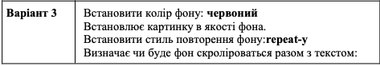

ВІД ЗИМИ І ДО ЗИМИ
Січень січе, Лютий лютує, Березень плаче,
Квітень квітує. Травень під ноги Стелить
травицю. Червень складає Сіно в копиці. Липень
медовий Бджілок чарує. Серпень чудовий Булки
дарує. Вересень трусить Груші в садочку.
Жовтень гаптує Клену сорочку. Йде листопад,
Застеля килими. Грудень надходить — Початок
зими. Ф. Петров
Если XVIII век был веком анализа, то XIX век по преимуществу стал веком геометрии. Быстро развиваются созданные в конце XVIII века начертательная геометрия (Монж, Ламберт) и возрождённая проективная геометрия (Монж, Понселе, Лазар Карно). Появляются новые разделы: векторное исчисление и векторный анализ, геометрия Лобачевского, многомерная риманова геометрия, теория групп преобразований. Происходит интенсивная алгебраизация геометрии — в неё проникают методы теории групп, возникает алгебраическая геометрия. В конце века создана «качественная геометрия» — топология.
Дифференциальная геометрия получила мощный толчок после выхода чрезвычайно содержательного труда Гаусса «Общие исследования о кривых поверхностях» (1822), где впервые были явно определены метрика (первая квадратичная форма) и связанная с ней внутренняя геометрия поверхности. Исследования продолжила парижская школа. В 1847 году Френе и Серре опубликовали известные формулы Френе для дифференциальных атрибутов кривой.
Крупнейшим достижением стало введение понятия вектора и векторного поля. Первоначально векторы ввёл У. Гамильтон в связи со своими кватернионами (как их трёхмерную мнимую часть). У Гамильтона уже появилось скалярное и векторное произведение. Сверх того, Гамильтон ввёл дифференциальный оператор и многие другие понятия векторного анализа, в том числе определение вектор-функции и тензорного произведения.
Компактность и инвариантность векторной символики, использованной в первых трудах Максвелла, заинтересовали физиков; вскоре вышли «Элементы векторного анализа» Гиббса (1880-е годы), а затем Хевисайд (1903) придал векторному исчислению современный вид.
Проективная геометрия после полутора веков забвения вновь привлекла внимание — сначала Монжа, затем его учеников — Понселе и Лазара Карно. Карно сформулировал «принцип непрерывности», который позволяет сразу распространить некоторые свойства исходной фигуры на фигуры, полученные из неё непрерывным преобразованием (1801—1806). Несколько позднее Понселе ясно определил проективную геометрию как науку о проективных свойствах фигур и дал систематическое изложение её содержания (1815). У Понселе уже полностью легализованы бесконечно удалённые точки (даже мнимые). Он сформулировал принцип двойственности (прямых и точек на плоскости).
С конца 1820-х годов формируется школа проективных геометров в Германии (Мёбиус, Плюккер, Гессе, Штейнер и другие). В Англии ряд работ опубликовал Кэли. При этом стали использоваться и аналитические методы, особенно после открытия Мёбиусом однородных проективных координат, включающих и бесконечно удалённую точку. Во Франции работы Понселе продолжил Мишель Шаль.
Большое влияние на развитие математики имела знаменитая речь Римана (1854) «О гипотезах, лежащих в основании геометрии». Риман определил общее понятие n-мерного многообразия и его метрику в виде произвольной положительно определённой квадратичной формы. Далее Риман обобщил теорию поверхностей Гаусса на многомерный случай; при этом появляются знаменитый риманов тензор кривизны и другие понятия римановой геометрии. Существование неевклидовой метрики, по Риману, может объясняться либо дискретностью пространства, либо некими физическими силами связи. В конце века Г. Риччи завершает классический тензорный анализ.
Во второй половине XIX века наконец привлекает общее внимание геометрия Лобачевского. Тот факт, что даже у классической геометрии существует альтернатива, произвёл огромное впечатление на весь научный мир. Он также стимулировал переоценку многих устоявшихся стереотипов в математике и физике.
В 1872—1875 годах Камилл Жордан опубликовал ряд работ по аналитической геометрии n-мерного пространства (кривых и поверхностей), а в конце века он предложил общую теорию меры.
Анализ в XIX веке развивался путём быстрой, но мирной эволюции.
Наиболее существенной переменой стало создание фундамента анализа (Коши, затем Вейерштрасс). Благодаря Коши[45] мистическое понятие актуального бесконечно малого исчезло из математики (хотя в физике оно используется до сих пор). Были поставлены вне науки и сомнительные действия с расходящимися рядами. Коши построил фундамент анализа на основе теории пределов, близкой к ньютоновскому пониманию, и его подход стал общепринятым; анализ стал менее алгебраичным, но более надёжным. Тем не менее до уточнений Вейерштрасса многие предрассудки ещё сохранялись: например, Коши верил, что непрерывная функция всегда дифференцируема, а сумма ряда из непрерывных функций непрерывна.
Широчайшее развитие получила теория аналитических функций комплексного переменного, над которой работали Лаплас, Коши, Абель, Лиувилль, Якоби, Вейерштрасс и другие. Значительно расширился сам класс специальных функций, особенно комплексных. Главные усилия были направлены на теорию абелевых функций, которые не вполне оправдали возлагавшиеся на них надежды, но тем не менее способствовали обогащению аналитического инструментария и созданию в XX веке более общих теорий.
Многочисленные прикладные задачи деятельно стимулировали теорию дифференциальных уравнений, выросшую в обширную и плодотворную математическую дисциплину. Детально исследованы основные уравнения математической физики, доказаны теоремы существования решения, создана качественная теория дифференциальных уравнений (Пуанкаре).
К концу века происходит некоторая геометризация анализа — появляются векторный анализ, тензорный анализ, исследуется бесконечномерное функциональное пространства (см. Банахово пространство, Гильбертово пространство). Компактная инвариантная запись дифференциальных уравнений гораздо удобнее и нагляднее, чем громоздкая координатная запись.

Намеченные у Эйлера аналитические методы помогли решить немало трудных проблем теории чисел (Гаусс[46], Дирихле и другие). Гаусс дал первое безупречное доказательство основной теоремы алгебры. Жозеф Лиувилль доказал существование бесконечного количества трансцендентных чисел (1844, подробнее в 1851), дал достаточный признак трансцендентности и построил примеры таких чисел в виде суммы ряда. В 1873 году Шарль Эрмит публикует доказательство трансцендентности числа Эйлера e, а в 1882 году Линдеман применил аналогичный метод и к числу π\pi .
У. Гамильтон открыл удивительный некоммутативный мир кватернионов.Возникла геометрическая теория чисел (Минковский).
Эварист Галуа, опередивший своё время, представляет глубокий анализ решения уравнений произвольных степеней[48]. Ключевыми понятиями исследования оказываются алгебраические свойства связанных с уравнением группы подстановок и полей расширения. Галуа завершил работы Абеля, доказавшего, что уравнения степени выше 4-й неразрешимы в радикалах.
По мере усвоения идей Галуа, со второй половины века, быстро развивается общая алгебра. Жозеф Лиувилль публикует и комментирует работы Галуа. В 1850-е годы Кэли вводит понятие абстрактной группы. Термин «группа» становится общепринятым и проникает практически во все области математики, а в XX веке — в физику и кристаллографию.
Формируется понятие линейного пространства (Грассман и Кэли, 1843—1844). В 1858 году Кэли публикует общую теорию матриц, определяет операции над ними, вводит понятие характеристического многочлена. К 1870 году доказаны все базовые теоремы линейной алгебры, включая приведение к жордановой нормальной форме.
В 1871 году Дедекинд вводит понятия кольца, модуля и идеала. Он и Кронекер создают общую теорию делимости.
В конце XIX века в математику входят группы Ли.
Источник